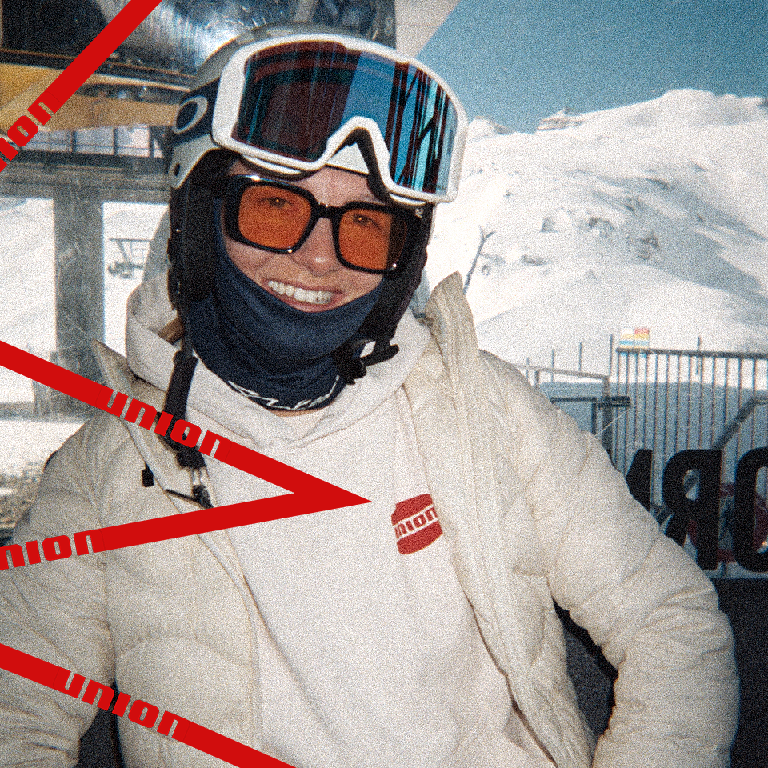
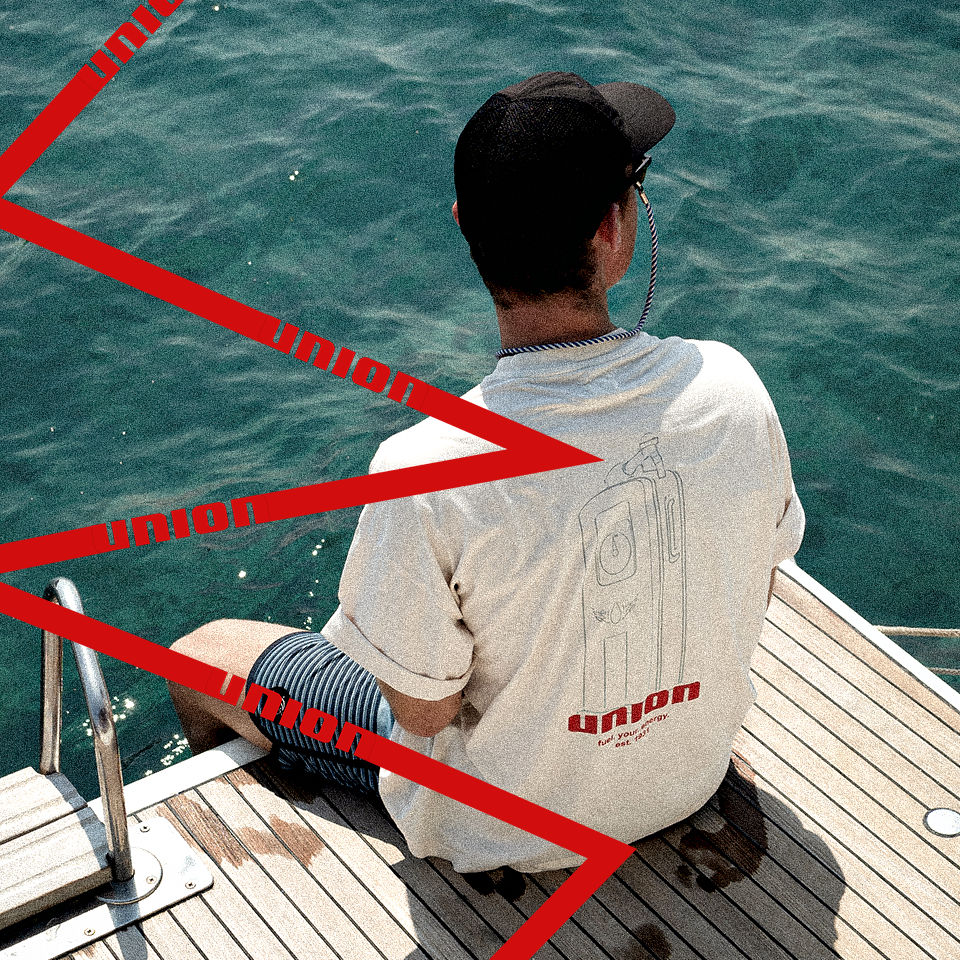
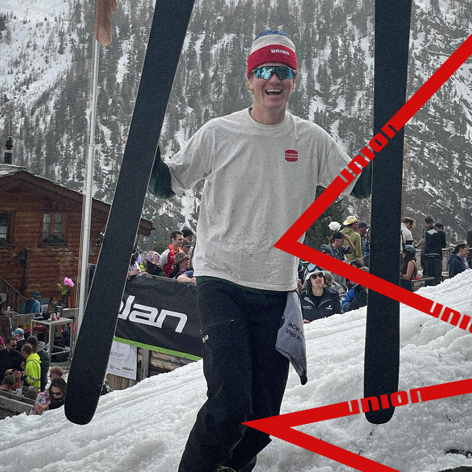

EN



CHLOÈ MOREAU
I’VE ALWAYS BELIEVED THAT THE BEST ADVENTURES START WHEN YOU STEP OUT OF YOUR COMFORT ZONE. FROM HIKING REMOTE MOUNTAIN TRAILS TO CHASING THE PERFECT SUNSET, I’M CONSTANTLY SEEKING NEW CHALLENGES. WHAT STARTED AS A PASSION FOR THE OUTDOORS HAS EVOLVED INTO A LIFESTYLE—ONE I’M GRATEFUL TO SHARE WITH ALL OF YOU. THANKS TO UNION, I’VE HAD THE OPPORTUNITY TO EXPAND MY REACH THROUGH COMMUNITY EVENTS AND SPONSORED TRIPS, WHICH HAVE CONNECTED ME WITH LIKE-MINDED ADVENTURERS AROUND THE GLOBE. WITH THEIR GEAR, I’VE PUSHED MY LIMITS FURTHER, TAKING ON MORE EXTREME CLIMBS AND OVERNIGHT TREKS. THEIR SUPPORT HAS BEEN A GAME-CHANGER IN MY JOURNEY, AND I CAN’T WAIT TO SEE WHERE THE TRAIL LEADS NEXT.
WITH THEIR GEAR, I’VE PUSHED MY LIMITS FURTHER, TAKING ON MORE EXTREME CLIMBS AND OVERNIGHT TREKS. THEIR SUPPORT HAS BEEN A GAME-CHANGER IN MY JOURNEY, AND I CAN’T WAIT TO SEE WHERE THE TRAIL LEADS NEXT.
MIKAEL ANDERSSON
THE OUTDOORS IS MORE THAN JUST A PASSION FOR ME—it’s WHERE I FIND MY TRUE SELF. WHETHER I’M ROCK CLIMBING IN THE ALPS, CAMPING IN THE DESERT, OR JUST SAVORING A SUNRISE WITH FRIENDS, I’M ALWAYS READY TO EMBRACE THE WILD. WITH THE SUPPORT OF UNION, I’VE NOT ONLY GAINED THE RIGHT GEAR TO TACKLE ANY TERRAIN BUT ALSO THE OPPORTUNITY TO LEAD COMMUNITY OUTDOOR EVENTS. THROUGH SPONSORED TRIPS AND GEAR TESTING, I’VE BEEN ABLE TO CONNECT WITH FELLOW ADVENTURERS, SHARING TIPS, STORIES, AND A LOVE FOR THE EARTH.
THEIR SPONSORSHIP HAS ALLOWED ME TO BRING OTHERS INTO THE WILD, HOSTING CAMPS AND ACTIVITIES THAT INSPIRE PEOPLE TO LEAVE BEHIND THE ORDINARY AND EXPLORE THE EXTRAORDINARY. I CAN’T IMAGINE A BETTER PARTNER IN THIS JOURNEY.


TrailBlazerX
FROM THE BUSTLING STREETS OF THE CITY TO THE CALM OF THE WILDERNESS, MY LIFE HAS COMPLETELY CHANGED. I NEVER EXPECTED TO BE OUT IN NATURE FULL-TIME, BUT NOW I CAN’T IMAGINE IT ANY OTHER WAY. I’VE GONE FROM WEEKEND TREKKER TO FULL-TIME BACKPACKER, AND I’M ON A MISSION TO INSPIRE OTHERS TO EMBRACE THE FREEDOM THAT COMES WITH THE OUTDOORS. THANKS TO UNION, I’VE BEEN ABLE TO LEVEL UP MY ADVENTURES.
THE GEAR HAS MADE A HUGE DIFFERENCE IN MY COMFORT AND PERFORMANCE, WHETHER I’M BACKPACKING THROUGH THE MOUNTAINS OR LEADING COMMUNITY CLEAN-UP EVENTS IN REMOTE LOCATIONS. THEIR SPONSORSHIP HAS GIVEN ME THE PLATFORM TO HOST OUTDOOR WORKSHOPS AND ADVENTURE MEETS, HELPING TO BRING MORE PEOPLE INTO THE OUTDOORS AND SHOWING THEM THAT THE WILD IS FOR EVERYONE.